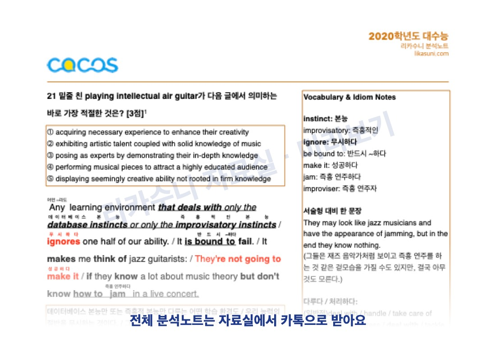

리카수니 분석노트 해설 · 이매동 코코스학원
2020 수능 영어 21번 함축 의미 해설·분석이에요. (2020학년도 대학수학능력시험 영어 21번 · 밑줄 함축 의미 · 3점 · 정답 ⑤ displaying seemingly creative ability not rooted in firm knowledge)
정답 근거, 오답 거르는 법, 구문(be bound to · 과거분사 후치 수식 drilled into · without + 동명사), 어휘를 정리했고 분석노트 pdf 받는 곳은 글 아래에 있어요.
안녕하세요, 이매동 코코스학원 리카수니 원장입니다.
학생 요청으로 만든 분석노트를 바탕으로 정리했어요. 시험지를 옆에 펴 놓고 보시면 더 잘 보여요.
| 한눈에 보는 정답 · 시험: 2020학년도 대학수학능력시험 영어 (2019년 11월 시행) · 번호: 21번 (밑줄 친 playing intellectual air guitar 가 의미하는 바, 3점) · 정답: ⑤ displaying seemingly creative ability not rooted in firm knowledge (탄탄한 지식에 뿌리를 두지 않은, 겉보기에만 창의적인 능력을 보여 주는 것) |
좋은 학습에는 깊은 지식(데이터베이스)과 즉흥성(창의성)이 모두 필요하다는 글이에요.
흐름은 한쪽만 다루는 학습은 실패한다 → 지식만 강조하면 창의성이 손상됨 → 창의성만 강조하면 깊은 이해를 무시함 → 그런 사람은 재즈 음악가처럼 보이지만 결국 아무것도 모른다 = 지적인 에어 기타예요.
| · 근거 1: 재즈 기타리스트 비유 – 음악 이론은 많이 알지만 즉흥 연주를 못 하면 성공하지 못해요. 지식과 즉흥성 둘 다 필요하다는 주제예요. · 근거 2: 어떤 곳은 처음부터 지식을 쌓지 않은 채 창의적 활용만 강조해, 깊은 이해를 얻어야 하는 필요를 무시해요. · 근거 3: 그런 사람은 재즈 음악가처럼 보이고 즉흥 연주를 하는 것 같은 겉모습이 있지만, 결국 아무것도 몰라요. → 에어 기타 = 실제 기타 없이 치는 흉내. 지식 없이 창의적인 척하는 것, 정답 ⑤예요. |
| · ① 창의성을 높이는 데 필요한 경험을 얻는 것 → 밑줄은 부족함을 비판하는 말이에요. 긍정적인 '경험 쌓기'가 아니에요. · ② 탄탄한 지식과 결합된 예술적 재능 → 글에서 칭찬하는 '둘 다 갖춘' 상태라 밑줄과 정반대예요. · ③ 깊은 지식을 보여 주며 전문가인 척 → 이 사람들은 깊은 지식이 '없어요'. · ④ 교육 수준이 높은 청중을 끌기 위한 연주 → 청중 이야기는 나오지 않아요. 함축 의미 문제는 밑줄 바로 앞 문장(but in the end they know nothing)이 밑줄을 풀어 주는 경우가 많아요. |

▲ 2020 수능 영어 21번 함축 의미 해설·분석 pdf 분석노트 미리보기
| 1) 주격 관계대명사 that / be bound to (반드시 ~하다) → Any learning environment that deals with only the database instincts or only the improvisatory instincts ignores one half of our ability. It is bound to fail. (2020학년도 수능 21번) 2) make + 목적어 + 동사원형 (makes me think of) / 의문사 + to부정사 (how to jam) 3) 과거분사 후치 수식 the improvisatory instincts drilled into us (우리에게 주입된) 4) without + 동명사 (without installing ~) / in the first place (애초에) 5) 계속적 용법 which (선행사 a deep understanding of a subject) 6) 주격 관계대명사 who / 관계부사 where / look like + 명사 |
| 영어 | 뜻 |
|---|---|
| instinct | 본능 |
| improvisatory | 즉흥적인 / improviser 즉흥 연주자 |
| ignore | 무시하다 |
| be bound to | 반드시 ~하다 |
| make it | 성공하다 |
| jam | 즉흥 연주하다 / jamming 즉흥 합주 |
| emphasize | 강조하다 |
| rote-learned | 기계적으로 암기한 |
| drill into | 반복해서 깊이 새기다, 주입하다 |
| obtain | 얻다 |
| appearance | 겉모습 |
| intellectual | 지적인 |
| deal with | 다루다, 처리하다 (= handle, address, cover) |
| 서술형 대비 분석노트에 '서술형 대비 한 문장'(They may look like jazz musicians and have the appearance of jamming, but in the end they know nothing. 그들은 재즈 음악가처럼 보이고 즉흥 연주를 하는 것 같은 겉모습을 가질 수도 있지만, 결국 아무것도 모른다)과 영어 핵심 요약(Core Summary), deal with 의 비슷한 말(handle·address·tackle·cover)을 정리해 두었어요. |
| 📂 2020 수능 영어 21번 분석노트 pdf 받는 법 끊어 읽기·해석·구문·어휘가 정리된 PDF 는 리카수니 자료실에서 카카오 로그인 후 카톡으로 받을 수 있어요. 다른 번호도 같은 곳에서 요청할 수 있고, 2020 수능 전과목 문제지·정답 pdf 는 같은 페이지 위쪽 회차 메뉴에서 볼 수 있어요. ▶ 2020 수능 영어 분석노트 pdf (리카수니 자료실) https://data.likasuni.com/suneung/2020/eng/ |
Q. 2020 수능 영어 21번 함축 의미 해설·분석 정답은?
A. ⑤ displaying seemingly creative ability not rooted in firm knowledge (탄탄한 지식에 뿌리를 두지 않은, 겉보기에만 창의적인 능력을 보여 주는 것)
Q. 분석노트 pdf 는 어디서 받나요?
A. 리카수니 자료실(data.likasuni.com)에서 카카오 로그인 후 카톡으로 받을 수 있어요. 위 안내의 링크로 이동하세요.
이상 2020 수능 영어 21번 함축 의미 해설·분석 pdf 정리였어요. 궁금한 점은 댓글로 남겨 주세요.
| 🏫 이매동 코코스학원 안내 분당 이매동 코코스학원은 초등·중등·고등 영어와 수학을 가르쳐요. 모의고사·수능특강·내신 대비가 궁금하시면 편하게 문의해 주세요. · 홈페이지: https://www.cocosedu.co.kr/ · 주소: 경기 성남시 분당구 판교로 476 2층 |
#2020수능영어 #2020수능영어21번 #2020수능영어분석 #수능영어21번 #수능영어pdf #2020학년도수능영어 #수능함축의미 #수능영어기출 #airguitar #beboundto #영어분석노트 #이매동영어학원 #코코스학원 #리카수니